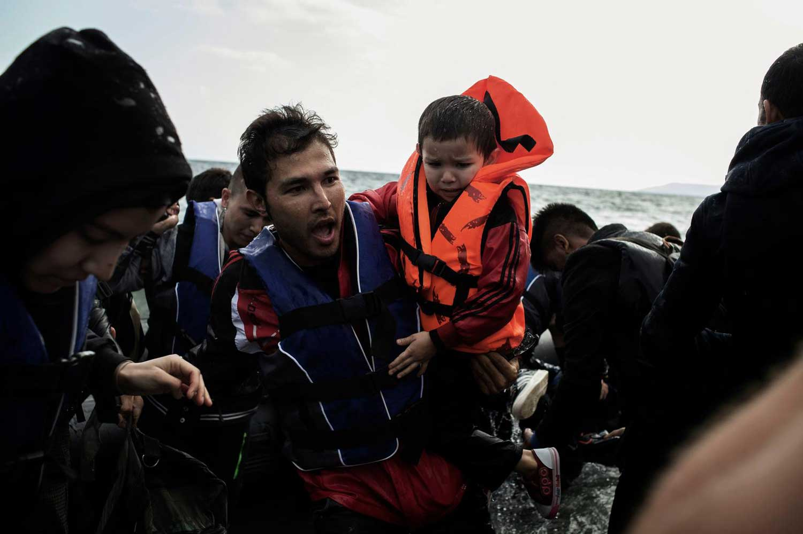

Refugee and migrant crisis: 4.5 million children in five countries uprooted
The refugee and migrant crisis has grabbed the world’s attention, but the issue goes far beyond the borders of Europe.
Since the beginning of the year, more than half a million people have crossed the Mediterranean into Europe. About one fifth of those who have reached Europe’s shores are children. So where are refugees and migrants fleeing from, and why?
In Syria, a brutal conflict now well into its fifth year has forced more than 4 million people into refugee camps, makeshift shelters, and overstretched host communities in Jordan, Iraq, Lebanon and Turkey.
In Afghanistan, the second major source of refugees worldwide, more than 2.6 million have fled the country.
In Somalia, conflict, instability and a hunger crisis have pushed nearly 1 million Somalis – half of them children – out of their country.
Nearly 666,000 people have fled the conflict in Sudan, while some 760,000 people, nearly two thirds of them children, have fled South Sudan since the current conflict erupted in December 2013.
Children in countries in conflict are under daily attack. They risk abduction, maiming, recruitment and death. Their journey to safety is fraught with dangers. Whether they are fleeing by sea or by road, they are often at the mercy of smugglers and have to carry the physical and psychological burdens of war, displacement and hostility.